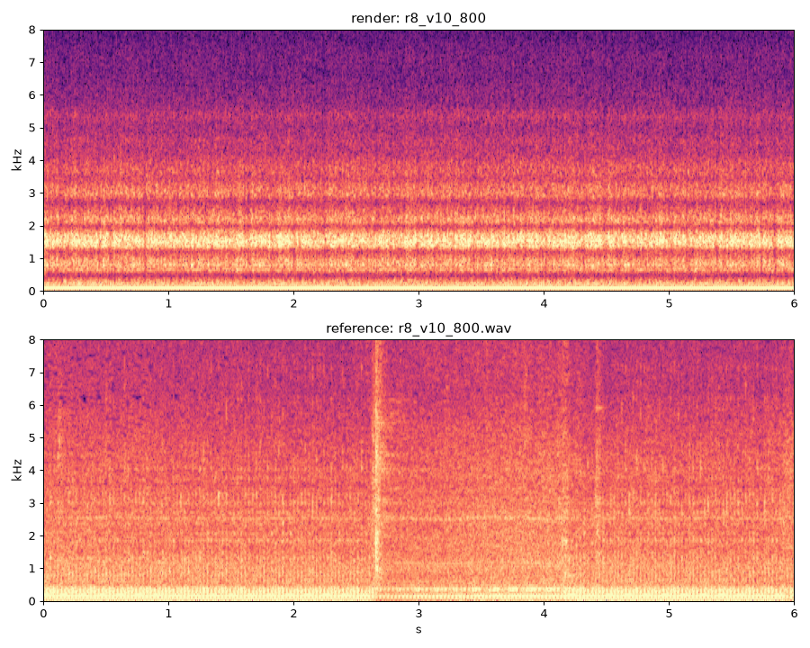
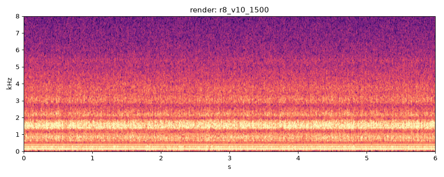
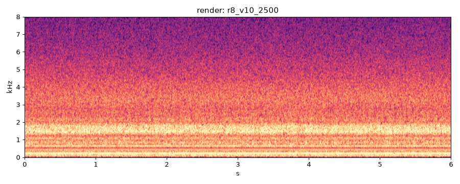
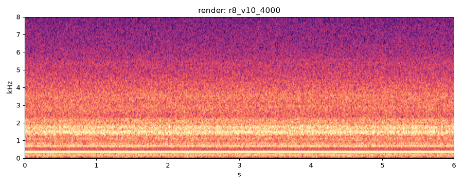
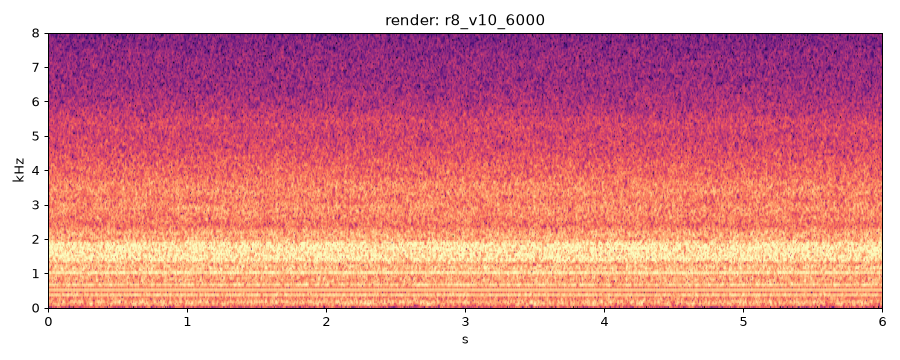
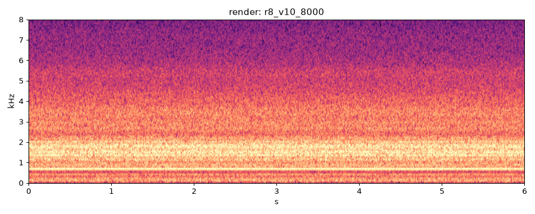
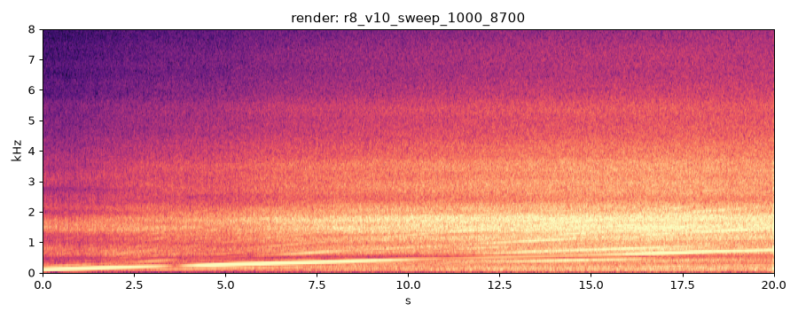

| check | value |
|---|---|
| deterministic | PASS |
| nan_free | PASS |
| below_full_scale | PASS |
| rtf_60s | 5.13 |
| rtf_ok | FAIL |
| firing_freq_ok | FAIL |
current best
reference
| metric | value | vs prev |
|---|---|---|
| multi-scale STFT dist | 1.8683 | |
| firing freq error % | 0.009 | |
| half-order level dB | -10.8 | |
| harmonic RMS err dB | 8.61 | |
| mel L1 | 1.9317 | |
| MFCC cosine | 0.0230 | |
| pulse env L2 | 0.3412 | |
| HNR dB | 11.0 | |
| crest dB | 14.4 | |
| centroid Hz | 1674 | |
| flatness | 0.0002 | |
| max_abs | 0.039 | |
| rtf | 4.530 | |
| peak_cyl_pressure_bar | 18.240 |

current best
| metric | value | vs prev |
|---|---|---|
| firing freq error % | 0.036 | |
| half-order level dB | -13.1 | |
| HNR dB | 8.9 | |
| crest dB | 14.4 | |
| centroid Hz | 1973 | |
| flatness | 0.0006 | |
| max_abs | 0.030 | |
| rtf | 4.640 | |
| peak_cyl_pressure_bar | 36.070 |

current best
| metric | value | vs prev |
|---|---|---|
| firing freq error % | 0.036 | |
| half-order level dB | -6.9 | |
| HNR dB | 6.3 | |
| crest dB | 13.0 | |
| centroid Hz | 2247 | |
| flatness | 0.0014 | |
| max_abs | 0.027 | |
| rtf | 4.440 | |
| peak_cyl_pressure_bar | 52.090 |

current best
| metric | value | vs prev |
|---|---|---|
| firing freq error % | 0.023 | |
| half-order level dB | -3.7 | |
| HNR dB | 8.3 | |
| crest dB | 12.8 | |
| centroid Hz | 2335 | |
| flatness | 0.0012 | |
| max_abs | 0.052 | |
| rtf | 4.510 | |
| peak_cyl_pressure_bar | 75.470 |

current best
| metric | value | vs prev |
|---|---|---|
| firing freq error % | 16.195 | |
| half-order level dB | 1.8 | |
| HNR dB | 4.1 | |
| crest dB | 14.1 | |
| centroid Hz | 2272 | |
| flatness | 0.0009 | |
| max_abs | 0.140 | |
| rtf | 4.630 | |
| peak_cyl_pressure_bar | 98.670 |

current best
| metric | value | vs prev |
|---|---|---|
| firing freq error % | 0.130 | |
| half-order level dB | -3.9 | |
| HNR dB | 4.8 | |
| crest dB | 12.6 | |
| centroid Hz | 2298 | |
| flatness | 0.0009 | |
| max_abs | 0.185 | |
| rtf | 4.930 | |
| peak_cyl_pressure_bar | 102.570 |

| metric | value | vs prev |
|---|---|---|
| HNR dB | 5.4 | |
| crest dB | 16.5 | |
| centroid Hz | 1987 | |
| flatness | 0.0004 | |
| max_abs | 0.236 | |
| rtf | 5.170 | |
| peak_cyl_pressure_bar | 114.990 |
